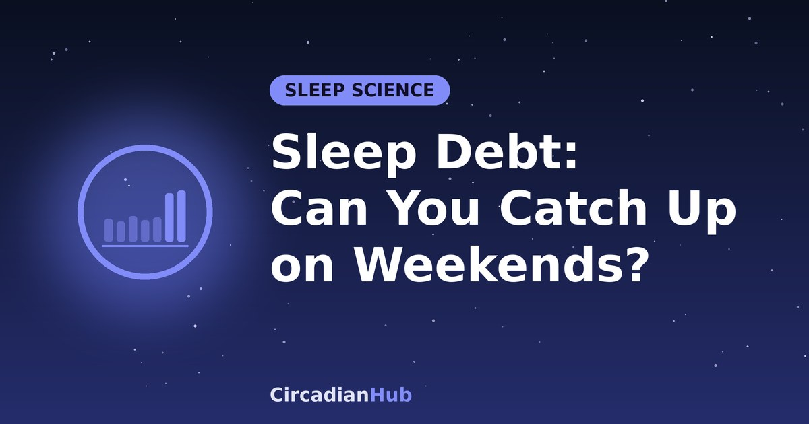

Sleep Debt: Can You Really Catch Up on Weekends? What the Research Says

Five short nights, then a long lie-in on Saturday and Sunday. For many people that is the default sleep schedule, and it comes with a comforting belief: that the weekend pays back what the week took. The idea is partly right and partly wrong. Extra sleep does help, but the research suggests it does not fully undo a week of short nights, and the way you catch up matters. This guide explains what sleep debt is, what studies show, and how to recover in a way that actually works.
What is sleep debt?
Sleep debt is the gap between the sleep your body needs and the sleep you actually get. If you need 8 hours and get 6 hours and 30 minutes on weekdays, you are 1 hour and 30 minutes short each night, or 7 hours and 30 minutes by Friday. Our guide to how much sleep you need explains how to find your own number.
The "debt" comparison is useful, but it is only a rough metaphor. Your body does not keep a neat bank balance, and the hours do not add up like money. Two people with the same shortfall can feel very different, and the effects depend on how long the shortfall lasts, your age and your genes.
How do you know you have it?
Sleep debt is easy to miss, because people adapt to feeling tired and stop noticing. Common signs include:
- You need an alarm to wake, and feel heavy when it rings.
- You rely on caffeine to get through the morning or afternoon.
- You fall asleep within a few minutes of lying down. Very short sleep latency is often a sign of too little sleep.
- You sleep much longer on days off, usually two hours or more.
- You struggle to concentrate, feel irritable or make more small mistakes than usual.
- You nod off in meetings, on the sofa or on public transport.
What happens if you never catch up?
A well-known laboratory study from 2003, led by Hans Van Dongen, kept healthy adults to 4, 6 or 8 hours in bed for two weeks. The people on 6 hours a night showed steadily worsening attention and reaction time over the two weeks, and by the end their performance was roughly comparable to that after missing a whole night of sleep. The striking part was that they rated themselves as only slightly sleepy. In other words, people who are chronically short of sleep are poor judges of how impaired they are.
Longer-term, repeated short sleep is associated with higher risks for weight gain, type 2 diabetes, high blood pressure and low mood. Most of this evidence is observational, so it shows associations and not proof of cause, but it is consistent enough that sleep experts treat regular short sleep as a health issue and not simply a lifestyle choice.
What does the research say about catching up?
The studies on recovery sleep point in a consistent direction: catching up helps, but it is slower and less complete than people hope.
| Finding | What it suggests |
|---|---|
| In a 2003 lab study by Gregory Belenky and colleagues, volunteers who had slept 3 or 5 hours a night for a week were given three recovery nights of 8 hours. Their alertness improved but had not returned to normal. | A few good nights repair only part of the damage from a week of short ones. |
| In a small University of Colorado Boulder study published in 2019, people restricted to 5 hours a night for five days who then slept in at the weekend did not avoid the metabolic effects of the short nights, including a drop in insulin sensitivity. | Weekend recovery sleep may not fully protect the body from the effects of a short week. The study was small and short, so treat it with care. |
| A large Swedish study published in 2019 followed people over many years. Those who slept 5 hours or less on both weekdays and weekends had higher mortality than average, while short weekday sleepers who slept longer on weekends did not show the same increase. | Catch-up sleep may be linked to less harm over time. But the sleep hours were self-reported, and other factors could explain the link. |
Taken together, the evidence says that weekend sleep is better than no recovery, and it may soften some of the damage, but it is not a full repair. Making up a week of missed sleep in two nights is asking a lot. A regular, adequate amount of sleep is better than a pattern of short nights followed by long ones.
The hidden cost of big weekend lie-ins
There is also a second problem. If you go to bed late and sleep until noon on Saturday and Sunday, you shift your body clock later, in the same way as a small time zone change. On Sunday night you are not sleepy at your normal bedtime, and on Monday morning the alarm arrives when your body thinks it is still night. People often call this the Sunday-night slump or "Monday jet lag", and researchers call it social jet lag. Our westbound jet lag guide shows how the body clock resets, and our article on shifting your wake-up time explains why weekend lie-ins undo weekday progress.
A better approach is to catch up in a way that keeps your clock steady. That means extra sleep, but not extra-late sleep.
How to pay back sleep debt properly
- Add sleep in small steps. Go to bed 30 to 60 minutes earlier on most nights, rather than relying on two giant nights at the weekend. Earlier bedtimes keep your wake time, and so your body clock, steady.
- Limit the weekend lie-in. Sleeping in by about an hour is usually fine. Much more than that can shift your clock, so get up, get bright light and use a nap if you need more rest.
- Protect Sunday night. Go to bed at your usual weekday time or slightly earlier, so that Monday does not start with a deficit.
- Use short naps. A 20-minute nap before about 15:00 can take the edge off tiredness without spoiling night sleep. Our guide to the best nap length explains the options.
- Get morning light. Daylight soon after waking anchors your clock and makes the next night easier. See morning sunlight and your circadian rhythm.
- Be patient. If you have been short of sleep for weeks, it may take a week or more of good nights to feel fully recovered.
A sample two-week recovery plan
This example is for someone who needs 8 hours, has been getting about 6 hours and 30 minutes, and has to wake at 07:00 on weekdays.
| Days | Bedtime | Wake time | Sleep |
|---|---|---|---|
| Weekdays, week 1 | 23:00 (instead of about 00:30) | 07:00 | About 8 hours |
| Saturday | 23:00 | 08:00 | About 9 hours |
| Sunday | 22:30 | 07:00 | About 8.5 hours |
| Weekdays, week 2 | 23:00 | 07:00 | About 8 hours |
The main change is moving bedtime about 90 minutes earlier, and keeping the wake time almost the same. If 23:00 is too early to fall asleep, move it by 15 to 30 minutes every couple of days. The CircadianHub calculator shows bedtimes for any wake time on whole 90-minute cycles, and our pre-bed routine guide can help with the wind-down.
Common myths about sleep debt
"I do fine on 5 or 6 hours"
Some people believe they are naturally short sleepers. A very small number of people do have genetic variants that allow them to function on less sleep, but they are rare. Most people who believe they do well on 5 or 6 hours have simply become used to feeling below their best.
"Sleeping in on Sunday fixes everything"
One long sleep does not erase a week of shortfall, and a big lie-in can leave you with a poor Sunday night. Consistency beats compensation.
"More sleep is always better"
Sleep needs have a range. If you regularly sleep much more than 9 hours and still feel exhausted, that is worth discussing with a doctor, since long sleep can be linked to health conditions and is not simply a sign of catching up.
Special cases
Shift workers
Shift work makes sleep debt harder to avoid, because you may have to sleep against your body clock. Keep a fixed "anchor" block of sleep if you can, use naps before and during shifts, and plan long recovery sleeps after a run of nights. See the rotating shift work guide and our article on shift work sleep disorder.
Teenagers and night owls
Teenagers often have body clocks that run later, and school start times can leave them with real sleep debt. A late chronotype makes weekday mornings harder. Our chronotypes article explains why, and small, consistent changes work better than one big lie-in.
Parents of young children
When nights are broken, nap when the baby naps if you can, share night duties where possible, and accept that a full catch-up will have to wait. Even one protected longer night a week can help.
Safety: do not drive when drowsy
Sleep debt does not just make you tired, it slows reactions and causes brief microsleeps. If you feel drowsy while driving, pull over somewhere safe and take a short nap, and do not rely on open windows or loud music. Caffeine takes about 20 to 30 minutes to work, so pairing a coffee with a short nap can help in an emergency. See our coffee nap article.
When to see a doctor
If you sleep enough hours and still feel unrefreshed, if you snore loudly or stop breathing in your sleep, if you have strong urges to move your legs at night, or if you fall asleep during the day despite long nights, speak to a doctor. Conditions such as sleep apnoea and restless legs syndrome can create a constant sense of debt that extra hours in bed will not solve.
Frequently asked questions
How long does it take to recover from sleep debt?
It varies. A night or two of short sleep may be fixed within a couple of good nights. After weeks of short sleep, expect to need at least a week of longer nights, and some people take longer.
Can you ever "bank" sleep in advance?
There is some evidence that extending sleep for several nights before a period of short sleep can improve performance afterwards. It is not a substitute for regular sleep, but it may be worth trying before a busy stretch.
Is it better to nap or sleep in?
For most people, a short afternoon nap is less disruptive to the body clock than a late morning lie-in. Keep the nap to 20 minutes, or a full 90-minute cycle if you have the time.
Why do I feel worse after sleeping in?
Sleeping much longer than usual can shift your body clock later, and waking from deep sleep can cause grogginess. See why waking mid-cycle can make you groggy for more on this.
Summary
- Sleep debt is the gap between the sleep you need and what you get. It is a useful metaphor, not an exact balance.
- Chronic short sleep affects attention and health, and people tend to underestimate how impaired they are.
- Studies suggest recovery sleep helps, but a weekend does not fully cancel a week of short nights.
- Big lie-ins shift your body clock and can make Monday harder.
- Pay back debt with earlier bedtimes, short naps, morning light and a steady wake time.
- If you are always tired despite enough sleep, speak to a doctor.
Work out when to wake from a nap of any length with our Nap Calculator.
Sources and further reading
Last updated: 1 October 2026. Links are general background reading from public-health organisations. How we write and update our guides.
Medical disclaimer: This article is for general information only and is not medical advice. If you have persistent sleep problems or excessive daytime sleepiness, speak with a doctor or sleep specialist.